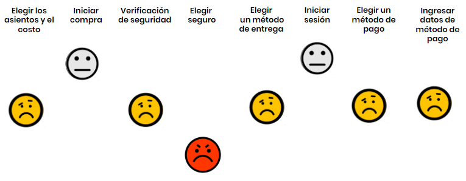
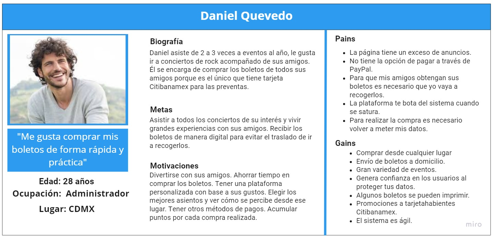
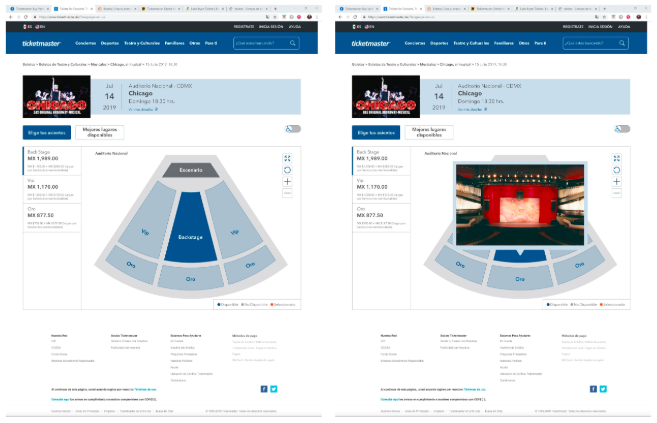
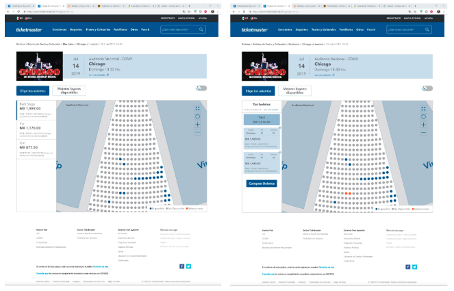
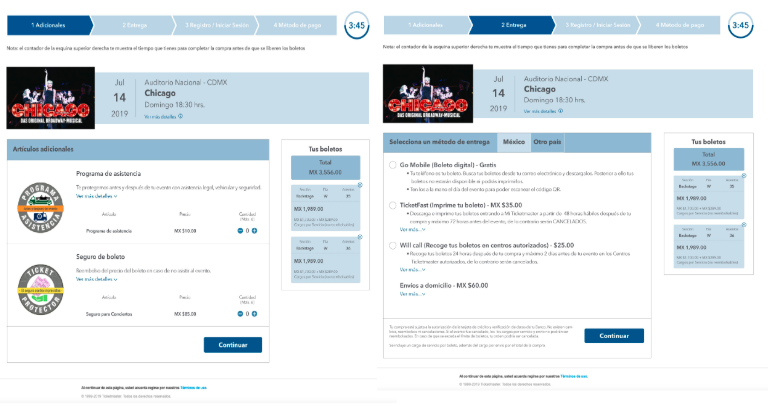
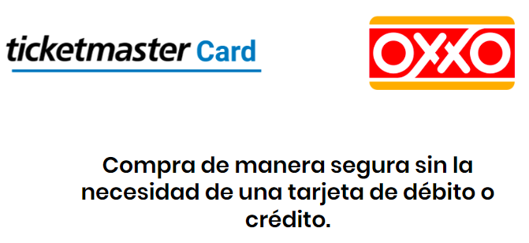
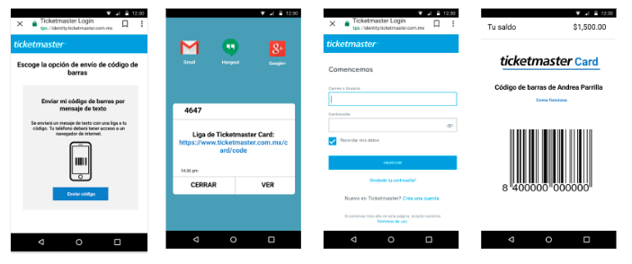
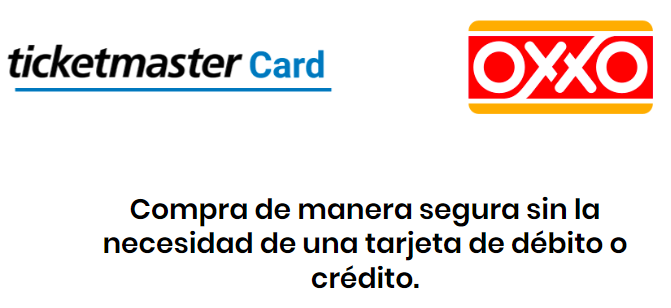
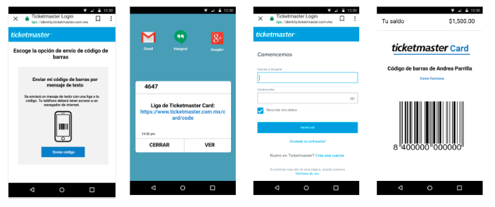
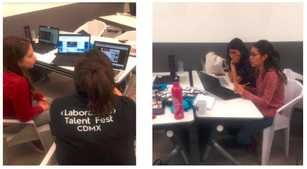

TICKETMASTER
Resumen
A muchas personas nos encantan los espectáculos: conciertos, obras de teatro, partidos de fútbol, partidos de basquetbol, circos, entre otros. Sin embargo, en muchos casos, conseguir boletos para estos espectáculos, no siempre es la mejor experiencia que podamos esperar en el 2019.
El mayor actor en el mercado de venta de boletos en México, Ticketmaster, nos contactó para rediseñar su plataforma. La propuesta de diseño consistió en mejorar el flujo de compra de la plataforma a través de aplciar UX Writing, personalización por medio de inteligencia artificial, implementar como método de pago y efectivo a través de Ticketmaster Card; y la obtención de boletos digitales.
Miembros del equipo: Andrea Parrilla, Andrea Ramírez, Ariadna Gutiérrez y Cristal García
Rol: UX Reseach
Duración: Dos sprints
Contexto
Ticketmaster opera en México desde principios de los 90, mediante un acuerdo para el uso y expansión de la marca por parte de CIE con su contraparte Ticketmaster USA, convirtiéndose en el mayor actor en el mercado de venta de boletos en México. Actualmente, Ticketmaster vende un gran porcentaje de sus boletos en línea, algo vía teléfono, y un porcentaje a través de sus numerosos centros de distribución; y cuenta con más de 350 contactos de exclusividad. Asimismo, CIE vende más de 16 millones de boletos al año, organiza más de 170 eventos y controla 12 inmuebles.
Sin embargo, en el 2018, la Comisión Federal de Competencia Económica indicó que CIE no podrá realizar durante 10 años ningún acuerdo de exclusividad para venta de boletos con promotores o terceros.Esto no implica, desde luego, que Ticketmaster deje de vender boletos del Estadio Azteca, Parque Fundidora, en Monterrey, o Auditorio Telmex, en Guadalajara, para citar sólo tres ejemplos, pero ya no podrá firmar contratos de exclusividad, por lo que tendrá que competir con otras vendedoras de boletos, tal y como sucede hoy con el Auditorio Nacional o con otros inmuebles que trabajan con varias empresas que venden boletos para espectáculos.
Esta situación representa un gran reto para la boletera, si es que quiere continuar con el liderazgo en la venta de boletos en México y seguir en el favoritismo de la gente. Para que no quede atrás es necesario modernizar su plataforma y a los usuarios ofrecerles nuevas experiencias.
Objetivo del proyecto
Identificar y solucionar el principal problema que existe en los cajeros automáticos para ofrecer una mejora en la experiencia de servicios a cliente.
PROCESO DE DISEÑO
Durante el proceso utilizamos el mindset de Design Thinking.

Comprender
Encuestas
A través de 38 encuestas identificamos en los usuarios el comportamiento y los momentos de compra referente a Ticketmaster.
- El 52% de las personas tienen una edad promedio de 26 a 32 años.
- Además de comprar en Ticketmaster, el 58% de las personas adquieren sus boletos en las instalaciones del evento. En segundo lugar con el 40%, los adquieren en Boletia y el 29% en Eventbrite.
- Las tres principales canales para comprar boletos en Ticketmaster son; sitio web (87%); centros Ticketmaster autorizados (32%), y taquillas del inmueble (21%).
- El 45% de las personas compran una vez al año.
- El 50% de las personas están satisfecha con el servicio de Ticketmaster.
- Los momentos de compra que les generan más dificultad son: obtener los boletos; elegir la sección y la cantidad de boletos; ingresar a la cuenta; ingresar el código de verificación y la preventa de boletos.
Benchmarck
Analizamos 10 empresas de venta de boletos a nivel nacional e internacional para conocer las tendencias, diseño e innovación. Encontramos que las plataformas ofrecen una navegación personalizada, boletos digitales, diseño estilo red social, la opción de revender los boletos y la creación de eventos.
Análisis heurístico
La evaluación de usabilidad del sitio web de Ticketaster, arrojó que la página tiene grandes deficiencias, debido a que la información es excesiva y poco clara; los datos se repiten; el sitio web no indica los errores, algunas secciones carecen de información y de poco valor; el diseño no tiene consistencia ni practicidad; los CTA no son visibles, y el portal no ofrece ayuda.
Entrevista
Entrevistamos a 8 personas que han comprado en Ticketmaster. Los principales problemas que identificamos refieren a tener dificultad para elegir asientos, el costo por el servicio es elevado, para recoger los boletos tiene que ir el titular de la tarjeta, y es complicado el elegir un método de entrega y de pago.
Coustomer Journey map
Durante las entrevistas conocimos los pains y gains del proceso de compra. Identificamos que el conflicto se sitúa desde elegir los asientos hasta ingresar los datos del método de pago, siendo el punto más crítico la elección de un seguro.
User persona
Con base en los datos encontrados elaboramos nuestra user persona.
Problema
El problema que identificamos reside en el proceso de compra, ya que, para el usuario le resulta frustrante y poco claro. Por ello, la propuesta de diseño partió de tres preguntas obtenidas con la herramienta HMW?
- ¿Cómo podríamos mejorar la experiencia de elegir un asiento en la plataforma de Ticketmaster?
- ¿Cómo podríamos hacer más sencillo y fácil el proceso de compra?
- ¿Cómo podríamos hacer que el usuario no tenga la necesidad de recoger su boleto?
Explorar
Las propuestas de rediseño de la plataforma engloban esfuerzos de UX Writing, personalización por medio de inteligencia artificial, implementar como método de pago PayPal y efectivo a través de Ticketmaster Card; y la obtención de boletos digitales.
HOME
El rediseño del Home, consistió en simplificar la información y reordenar los elementos. Los cambios realizados son:
- Los adds se redistribuyen en la parte central derecha de la página.
- El navbar contiene la segmentación del contenido por tipo de evento, el buscador, la opción de modificar el idioma español-inglés; y resalta el registro, inicio de sesión y la ayuda al usuario.
- Muestra un carrusel con los eventos destacados y promociones.
- Las cartelera general presenta la imagen del evento para hacer más visual el contenido. La información que se muestra por cada uno de los ítems es el nombre del evento, rango de precio, fecha, lugar y el CTA de comprar boleto.
PERSONALIZACIÓN
La plataforma brinda una experiencia de personalización, es decir, a partir del historial de búsqueda y de compra, Ticketmaster le dará al usuario recomendaciones de futuros eventos acorde a sus preferencias y las guardará en una sección llamada PARA TI.

ELEGIR ASIENTO
Los usuarios de Ticketmaster buscan poder elegir su asiento o ver la ubicación del lugar asignado. Ante esto, brindamos la opción de seleccionar la sección y el asiento de preferencia. Además, tiene la posibilidad de ver una panorámica 360° de como se ve el recinto desde el lugar elegido.
 UX WRITING
Los touchpoints, seleccionar artículos adicionales, método de pago y de entrega, presentaban exceso de información y mensajes difícil de entender. Para ello, los títulos fueron modificados al indicar el objetivo en español; las opciones cuentan con la sección “ver más detalles” para tener información específica. Además, en todo momento se puede ver el estatus de la compra.
BOLETO DIGITAL
Con la intención de evitar el ir a recoger los boletos a los puntos Ticketmaster, ofrecemos la opción de recibir los boletos de manera digital con un código QR para ingresar al evento, los cuales son enviados al correo electrónico para tener un fácil acceso a ellos.

MÉTODO DE PAGO
Para facilitar el pago de los boletos, incluimos dos nuevas opciones, Paypal para maximizar la seguridad y la confianza de los usuarios, al evitar compartir datos financieros con la plataforma; y a través de Ticketmaster Card, que consiste en efectuar un pago en efectivo en cualquier sucursal OXXO por medio de solicitar un código de barra a Ticketmarter, con ello, se tiene una tarjeta de prepago para pagar en el sitio web.
 



Materializar
Testing
El resideño de la plataforma fue testeada por 5 usuarios, quienes nos ayudaron a identificar si la navegación era correcta y de fácil uso. Los comentarios refirieron a seguir simplificando la información y especificar que es TicketmasterCard.
El prototipo puede consultarse aquí.